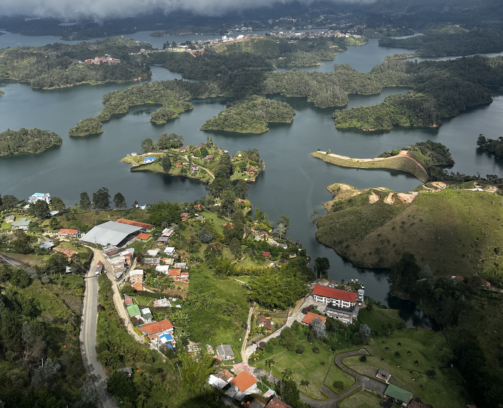
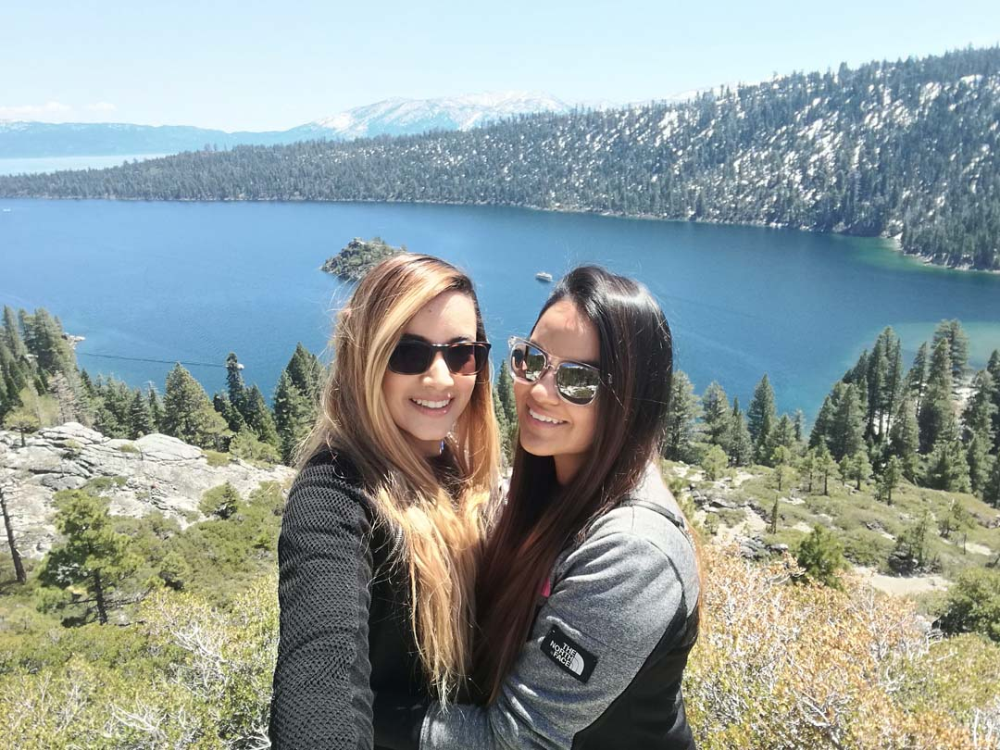
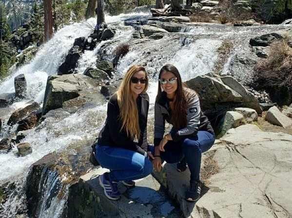
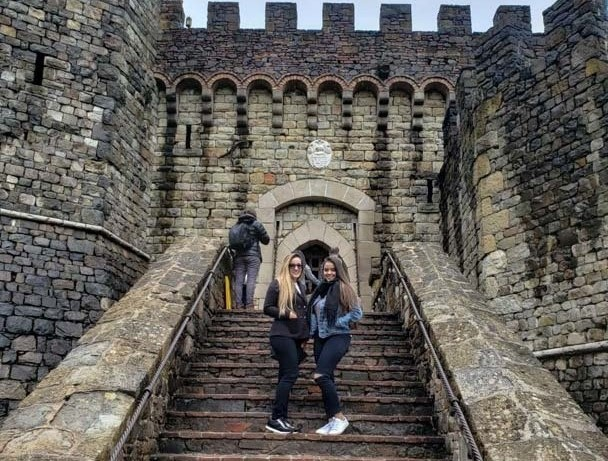
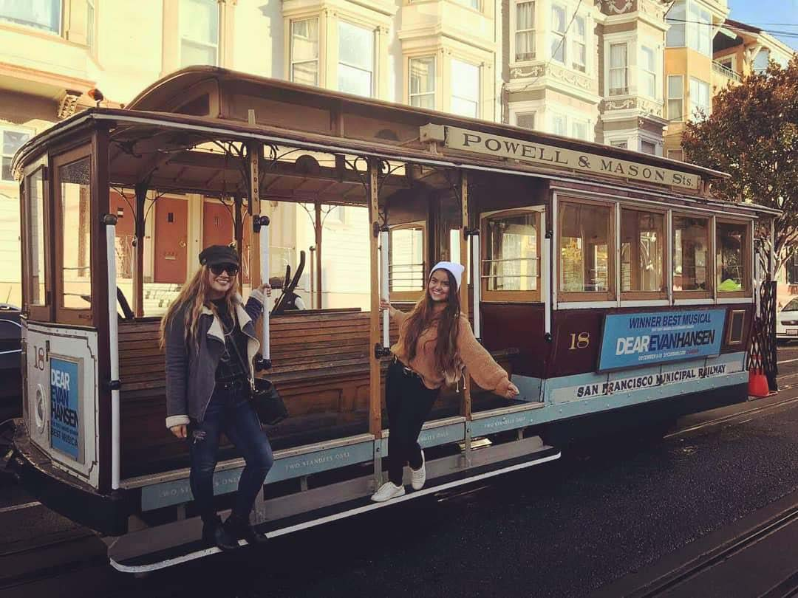
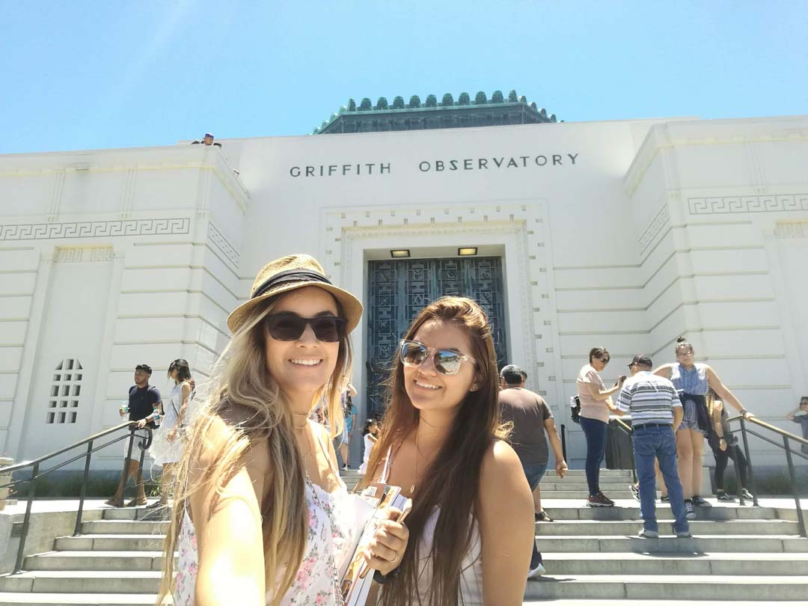
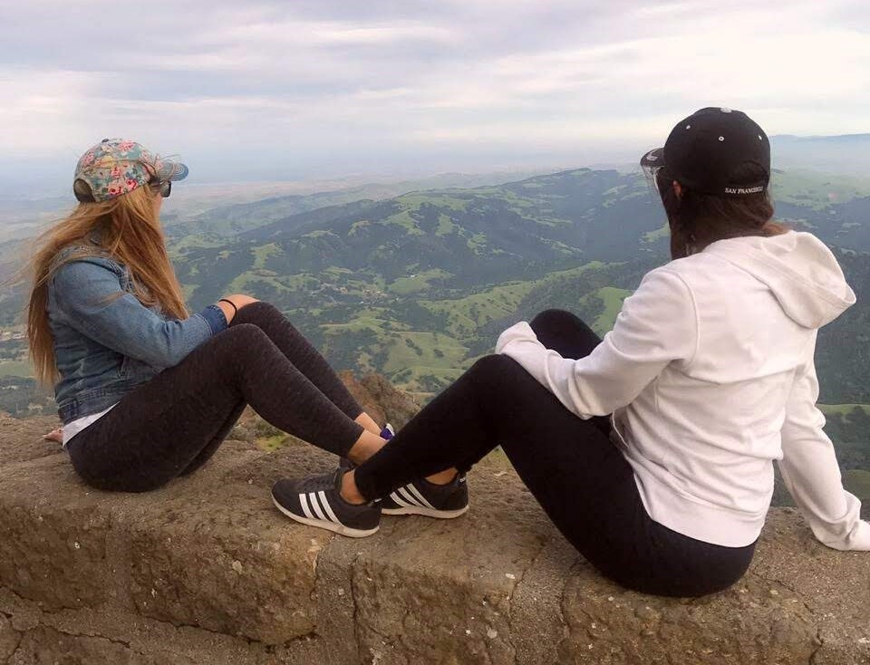
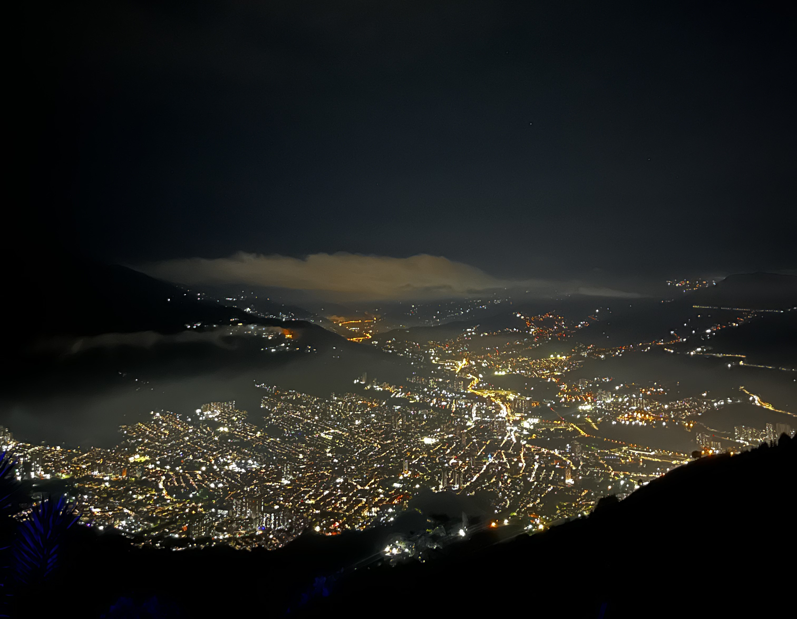

Ubicado en el departamento de Antioquia-Colombia, es sin duda uno de los pueblos que si o sí hay que conocer, su gente y su colorido pueblo lo enamoran a uno.
Es el lago mas grande de Nevada y el segundo lago mas profundo de Estados Unidos, es una experiencia de película que enamora y mas en invierno para poder vivir toda la experiencia de la nieve.
Belleza natural que no se presenta todo el año, esta cascada es gracias a la llegada del verano y conforme las montañas se vas descongelando aparece esta obra de la naturaleza.
Un hermoso viñedo ubicado en Napa, CA, ambiente familiar o para ir en pareja, se puede disfrutar del delicioso vino cultivado en Napa y sentirse en un ambiente italiano, parece magico.
Este ha sido uno de los lugares de San Francisco a los cuales siempre habiamos querido ir ya que gracias a las peiculas se convirtió en una atracción turistica y visitar SF y no ir es cómo no haber ido a SF.
Observatorio ubicado en Los Angeles, CA, desde acá se divisa toda la ciudad e incluso el famoso letreto de "Hollywood", una experiencia que uno no puede perserde al visitar L.A sin duda una experiencia única.
De esos lugares que te dejan sin palabras,ubicado en Clayton,CA, se divisa la ciudad se fondo, puede ser una opción para ejercitarte si eres de un buen estado físico o pueds incluso subir en carro.
Nuestra ciudad Natal, una belleza inigualable, solo la calidéz de su gente enamora y a eso le sumamos su comida y sus sitios turisticos, cómo dice por ahí "El riesgo es que te quieras quedar".
UN POCO SOBRE NOSOTRAS.